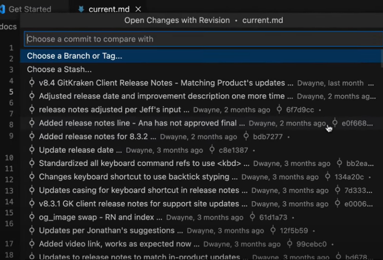

在 vscode 中 安装了一个 Git 插件，叫 GitLens，这个插件真的太好用了。
好久之前就安装上的，但是都没有细看，今天用到了它里面的一些功能，感觉这个软件做得太棒了。稍微写了一下使用方法。
GitLens 设置
使用 ctrl+shift+P，输入 GitLens: Open Settings
点击后会弹出 GitLens 的设置页面，可以进行一些自定义的设置。
查看提交信息
我们打开我的文本页面，鼠标随便点击某一行，在鼠标停顿的位置后方有一行灰色的注释，内容包括作者姓名，相关日期和提交信息。
悬停在注释上面会有更加详细的信息，hash，提交日期，完整的提交信息。这些信息可以让你一眼看到每行代码最后是由谁在什么时候提交的，非常方便代码审查或追踪代码来源。
Toggle File Blame
Toggle File Blame
如果我不想只看当前一行后面的注释信息，而是想要查看整个文档文本后面的注释信息，通过点击软件右上角的图标，选择 Toggle File Blame。
此时能看到每行文字最后的信息，同样支持悬停。
想要关闭的话再点一下右上角的刚刚点击的按钮或者按 ESC 退出。
Toggle File Heatmap
Toggle File Heatmap可以为文件添加热度图信息，以视觉方式显示文件每行被更改的频率。当你选择Toggle File Heatmap,在弹出的窗口中，最左侧会显示三种颜色的竖条：
- 蓝色：表示该行未更改或更改少的行。
- 红色：表示该行更改频繁的行。
- 紫色：表示该行注释或空行。
·颜色越深表示该行被更改的次数越多。这让你一眼就能看出文件哪些部分被更改最频繁。
Toggle File Changes
这个可以让人能很快就知道哪行代码发生了改变。
编辑器中会高亮显示自上次 Git 提交后被更改的所有内容。
如果按住 Alt 的同时点击上方圈住的箭头。会跳出更多的 git 提交历史对比列表，这些提交都是本文件的历史提交记录。（这个功能和 vscode 默认的 TIMELINE 功能是一样的。）

左侧菜单
选中后可以上移和下移重新排序菜单项。
或者移动到最左侧的按钮栏使其单独成为一个侧边栏按钮。
SEARCH & COMPARE
它可以在当前文件或整个仓库中搜索特定的代码，并与 Git tag 或分支进行比较。
可以让某个以前的分支与当前版本的代码进行对比。
选择钉图标后，就能一直固定这个对比，重启软件也不会消失。
STASHES
这个经常会用到，我们平时在开发自己的代码，开发到一半，此时需要修改线上分支，又不想要上传这部分代码，会使用临时的 stashes 来暂存起来。
因为我最近用这个功能挺多，但是都是在同一个 git 仓库上，stashes 不小心存太多了，现在想要恢复，又不知道里面到底是改了什么文件，就可以用这个 GitLens 的这个功能，能看到保存的文件修改了哪些内容，用来决定要不要恢复这个存储。
其他
- WORDTREES
工作树，和 git 分支有点像。 - TAGS
标签 - FILE HISTRORY
当前文件修改的历史记录 - COMMITS
提交的历史记录。 - COMMITS DETAILS
上一次提交的详细信息。